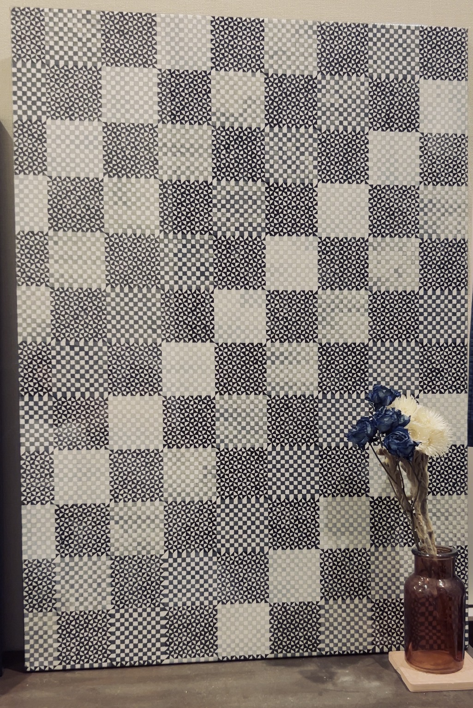
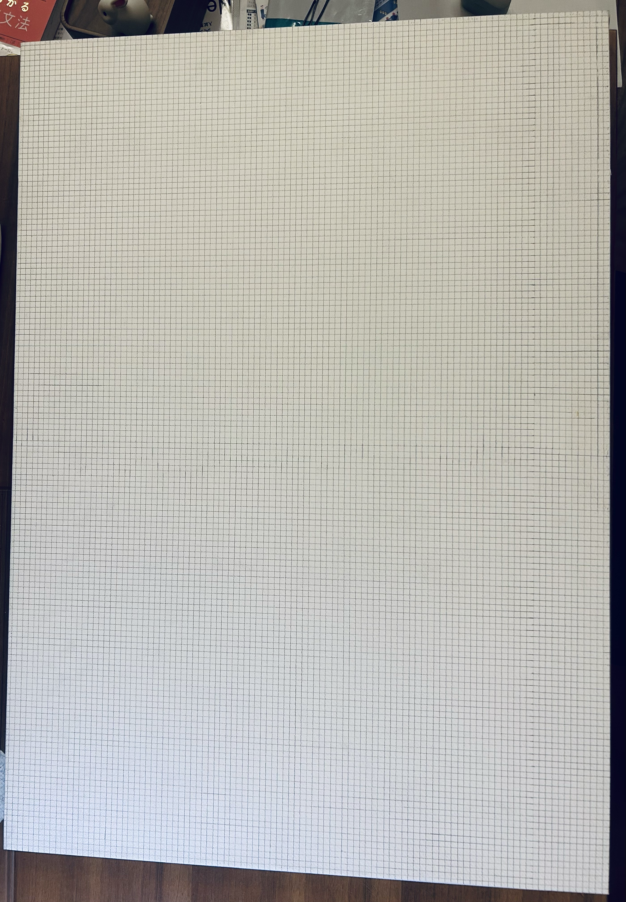
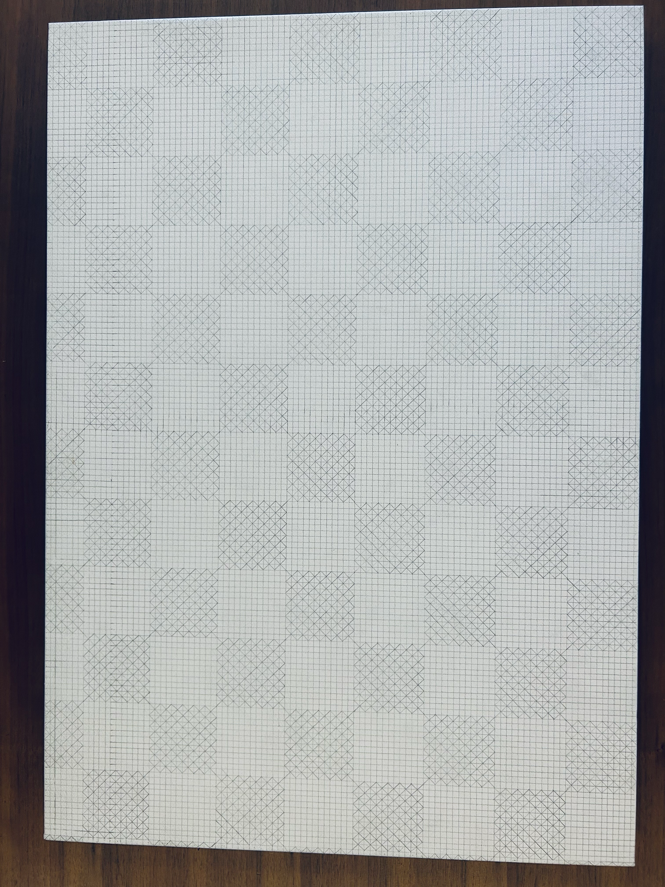
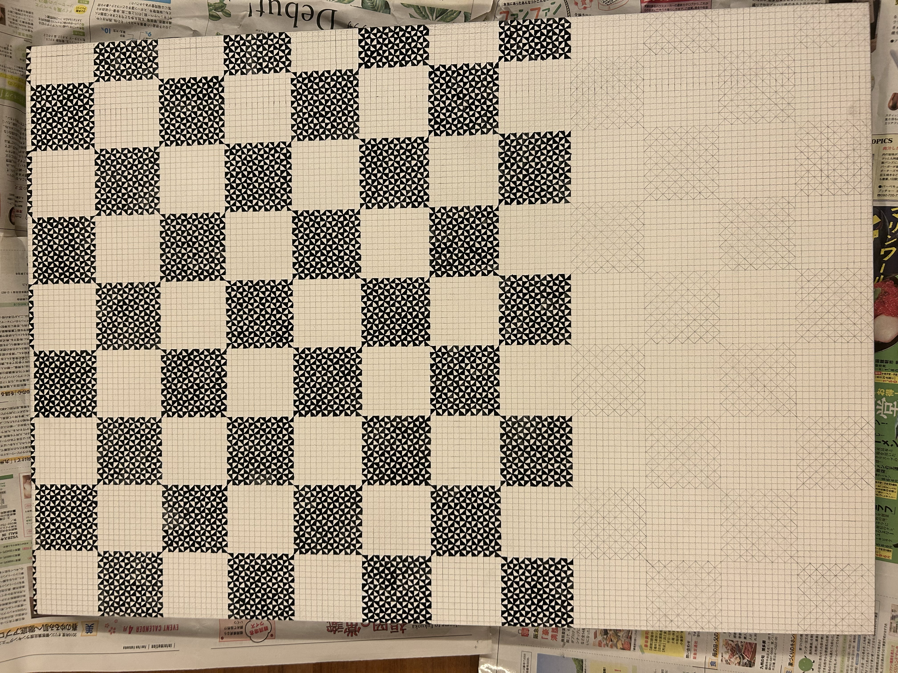
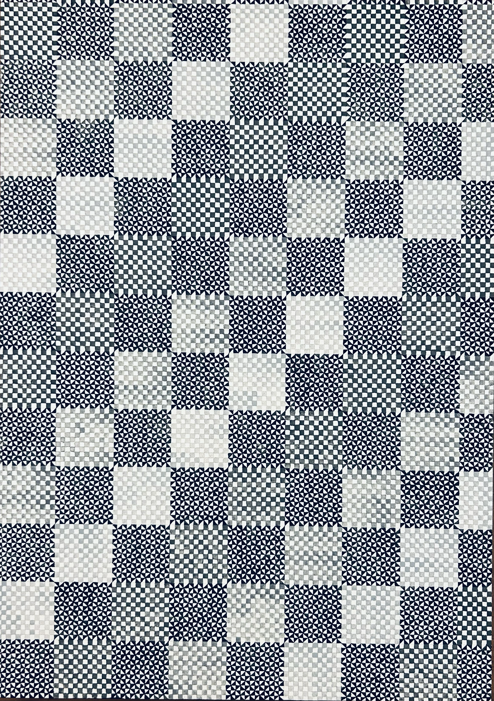
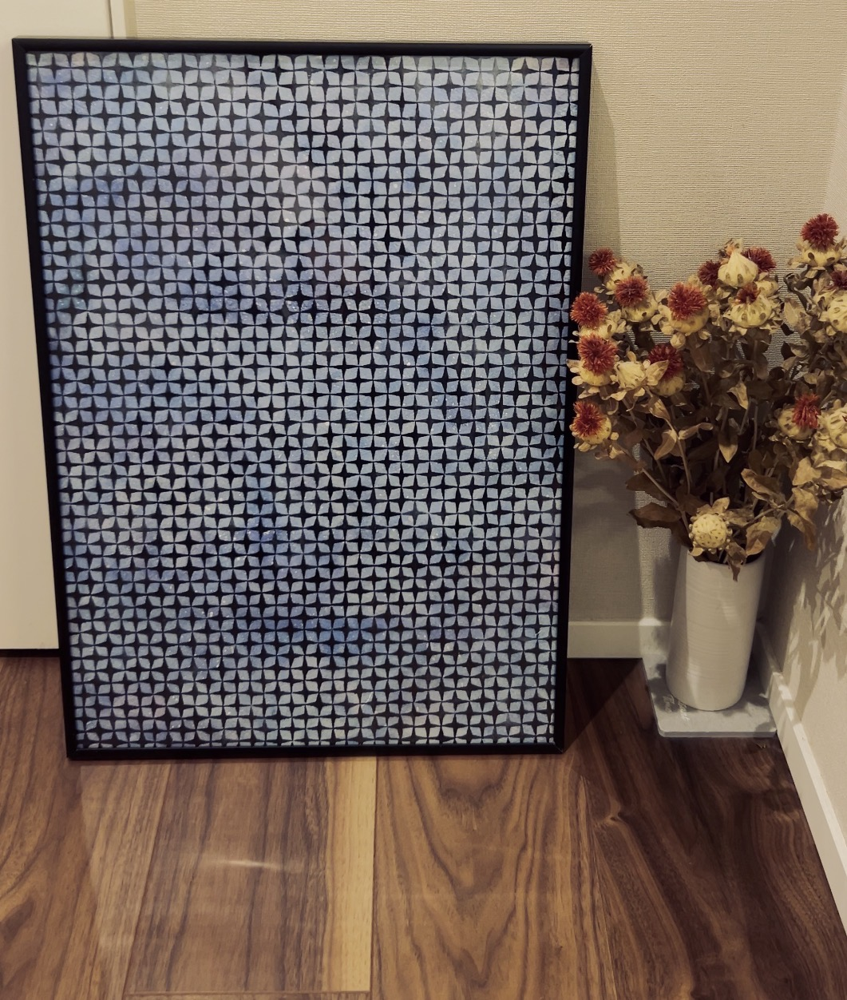
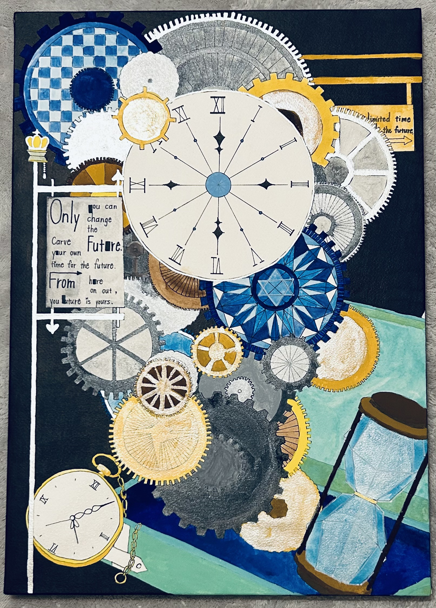
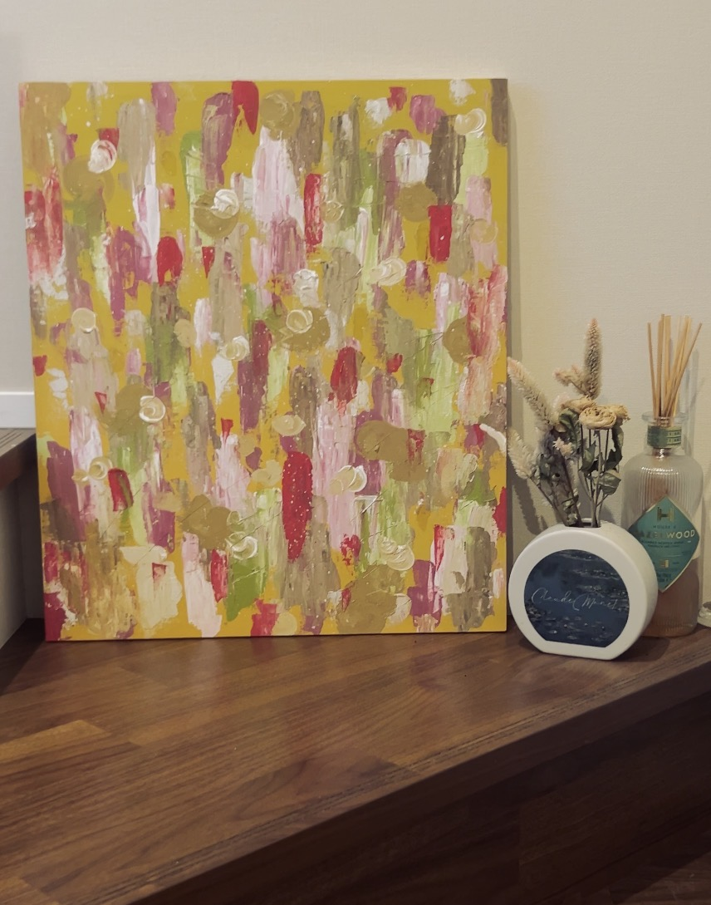

Geometry ・ Painting Knife

YEAR
CATEGORY
TOOLS
SIZE
2024
Artwork
Acrylic
B3
For this artwork, I first drew a 5mm grid on B3-sized paper before creating it. The title is “Truth, Goodness, and Beauty.” I expressed all three—truth, goodness, and beauty—and packed them into a single painting. It’s my absolute favorite piece.
I enjoy drawing geometric patterns. By drawing them from a grid—even though they can be created in an instant digitally—I seek to capture the beauty of analog art.






